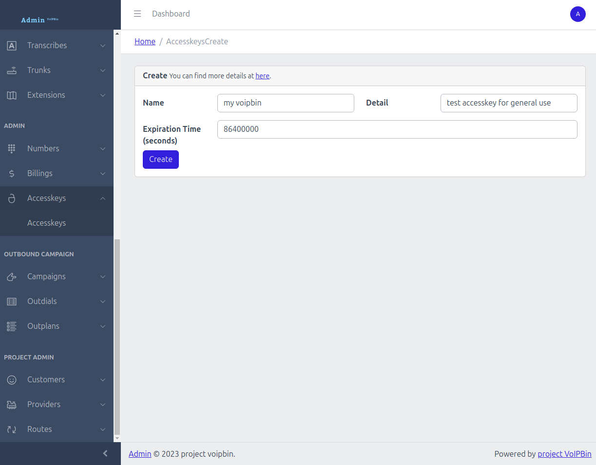

Quickstart¶
Getting Started¶
Create your VoIPBIN account and get API credentials.
Signup¶
To use the VoIPBIN production API, you need your own account. There are two ways to sign up: via the Admin Console (browser) or via the API (headless, for automated systems).
Sign up via Admin Console¶
Go to the admin console.
Click Sign Up.
Enter your email address and submit.
Check your inbox for a verification email.
Click the verification link in the email to verify your address.
You will receive a welcome email with instructions to set your password.
Once your password is set, you can log in to the admin console and start making API requests.
Sign up via API¶
For automated systems and AI agents, use the API signup flow. This is a single API call that returns an access key immediately.
Note
AI Implementation Hint
The POST /auth/signup response includes an accesskey with an API token that can be used immediately — no need to call POST /auth/login separately. Note that POST /auth/signup always returns HTTP 200 regardless of success to prevent email enumeration. An empty response body ({}) may indicate the email is already registered or invalid.
Initiate signup
Send a POST request to /auth/signup with your email address (String, Required) and accepted_tos (Boolean, Required, must be true). All other fields are optional.
$ curl --request POST 'https://api.voipbin.net/auth/signup' \
--header 'Content-Type: application/json' \
--data-raw '{
"email": "your-email@example.com",
"name": "Your Company Name",
"accepted_tos": true
}'
Response (always HTTP 200):
{
"customer": {
"id": "550e8400-e29b-41d4-a716-446655440000",
"name": "Your Company Name",
"email": "your-email@example.com",
...
},
"accesskey": {
"id": "a1b2c3d4-e5f6-7890-abcd-ef1234567890",
"token": "your-api-access-key-token"
}
}
The accesskey.token (String) is your API key. Use it immediately for authentication — see Authentication.
A verification email is also sent to the email address you provided. Click the link in the email to verify your address and activate your account. After verification, you will receive a welcome email with instructions to set your password.
Troubleshooting¶
- 200 OK but empty response (``{}``):
Cause: The email may already be registered, or the email format is invalid.
Fix: Try logging in via
POST /auth/loginwith the email. If the account exists, use the existing credentials.POST /auth/signupalways returns 200 to prevent email enumeration.
- 400 Bad Request:
Cause: Missing required fields (
emailoraccepted_tos) oraccepted_tosisfalse.Fix: Ensure the request body includes
"email"and"accepted_tos": true.
Authentication¶
Every API request must be authenticated using either a Token (JWT string) or an Accesskey (API key string). Both serve the same purpose — choose whichever fits your workflow.
Note
AI Implementation Hint
Use Token (JWT) for short-lived, session-based authentication (valid for 7 days). Use Accesskey for long-lived, programmatic access with custom expiration. For automated systems and AI agents, Accesskey is recommended because it does not require periodic re-authentication.
Generate a Token¶
Send a POST request to /auth/login with your username (String) and password (String) to receive a JWT token. The token is valid for 7 days.
$ curl --request POST 'https://api.voipbin.net/auth/login' \
--header 'Content-Type: application/json' \
--data-raw '{
"username": "your-voipbin-username",
"password": "your-voipbin-password"
}'
Response:
{
"username": "your-voipbin-username",
"token": "eyJhbGciOiJIUzI1NiIsInR5cCI6IkpXVCJ9..."
}
Use the token in subsequent API requests. See Using Credentials in API Requests below for usage examples.
Generate an Accesskey¶
For long-lived authentication, generate an access key. You can create one from the admin console or via the API.
Via Admin Console:

Via API:
$ curl --request POST 'https://api.voipbin.net/v1.0/accesskeys?token=<your-token>' \
--header 'Content-Type: application/json' \
--data-raw '{
"name": "my-api-key",
"detail": "API key for automated access"
}'
Response:
{
"id": "a1b2c3d4-e5f6-7890-abcd-ef1234567890",
"token": "your-access-key-token",
"name": "my-api-key",
"detail": "API key for automated access",
...
}
Note
AI Implementation Hint
If you signed up via the API (POST /auth/signup), the response already includes an accesskey with a valid token — you do not need to create another one. Use POST /v1.0/accesskeys only if you need additional keys or want to set a custom expiration via the expire (Integer, Optional) field.
Direct Token (Boot)¶
For resource-scoped access without user credentials, use a direct hash to obtain a short-lived JWT. This is used for direct links (e.g., AI voice agent web widgets) where the end user does not have a VoIPBIN account.
Send a POST request to https://api.voipbin.net/auth/boot with the direct_hash (String, Required). The hash is obtained from a direct link URL or from the hash field of GET https://api.voipbin.net/v1.0/directs. Must start with direct..
$ curl --request POST 'https://api.voipbin.net/auth/boot' \
--header 'Content-Type: application/json' \
--data-raw '{
"direct_hash": "direct.abc123def456..."
}'
Response:
{
"token": "eyJhbGciOiJIUzI1NiIsInR5cCI6IkpXVCJ9...",
"type": "direct",
"resource_type": "ai",
"resource_id": "a1b2c3d4-e5f6-7890-abcd-ef1234567890",
"customer_id": "c1b2c3d4-e5f6-7890-abcd-ef1234567890",
"expire": "2026-04-06T20:00:00Z"
}
The returned token is valid for 4 hours and grants access only to the resource types associated with the direct hash (e.g., aicall for an AI direct hash). Use it in subsequent API and WebSocket requests via the ?token= query parameter.
Note
AI Implementation Hint
Direct tokens have limited scope — they can only access specific resource types (e.g., aicall), not the full API. For WebSocket subscriptions, direct tokens can only subscribe to 4-part topics: customer_id:<uuid>:<resource_type>:<resource_id>. Broad customer-level topics (2-part or 3-part) are rejected.
Troubleshooting (Boot):
- 400 Bad Request:
Cause: The
direct_hashfield is missing, empty, or does not start withdirect..Fix: Verify the hash was copied correctly from the direct link URL.
- 400 Bad Request (Hash not found):
Cause: The direct hash does not resolve to any resource (deleted or invalid).
Fix: Verify the direct hash is still active via
GET https://api.voipbin.net/v1.0/directs.
- 400 Bad Request (Customer not active):
Cause: The customer account associated with the direct hash is not active.
Fix: Contact the account owner to reactivate the customer account.
Using Credentials in API Requests¶
The query parameter name depends on which credential type you are using:
Credential |
Query Parameter |
|---|---|
Token (JWT) |
|
Accesskey |
|
Token example:
$ curl --request GET 'https://api.voipbin.net/v1.0/calls?token=<your-token>'
Accesskey example:
$ curl --request GET 'https://api.voipbin.net/v1.0/calls?accesskey=<your-accesskey>'
Tokens can also be passed via the Authorization header:
$ curl --request GET 'https://api.voipbin.net/v1.0/calls' \
--header 'Authorization: Bearer <your-token>'
Note
AI Implementation Hint
The parameter names are not interchangeable — use token= for JWT tokens and accesskey= for access keys. Using the wrong parameter name results in 401 Unauthorized. All quickstart examples use ?token=<your-token> — if you are using an accesskey instead, replace token= with accesskey= in every request.
Troubleshooting¶
- 401 Unauthorized:
Cause: Token has expired (older than 7 days) or is malformed.
Fix: Generate a new token via
POST /auth/login. Ensure theAuthorizationheader uses the formatBearer <token>(with a space after “Bearer”).
- 401 Unauthorized (Accesskey):
Cause: Accesskey has expired (past
tm_expire) or has been deleted.Fix: Check the accesskey’s expiration via
GET /accesskeys. Generate a new one from the admin console if expired.
- 403 Forbidden:
Cause: The authenticated user lacks permission for the requested resource.
Fix: Verify the resource belongs to your customer account. Check your permission level (admin vs. manager).
For more details, see the full Accesskey tutorial.
Set Up Your Test Environment¶
Before running the tutorials, set up a SIP extension and softphone for voice testing, and configure event delivery to observe real-time notifications.
Extension & Softphone Setup¶
Create a SIP extension and register a softphone (Linphone) to receive calls from VoIPBIN. This is required for the Real-Time Voice Interaction scenario.
A valid authentication token (String) or accesskey (String). See Authentication.
Your customer ID (UUID). Obtained from
GET https://api.voipbin.net/v1.0/customeror from your admin console profile.Linphone softphone installed on your computer or mobile device. Download from linphone.org.
Note
AI Implementation Hint
This section requires a human with a softphone to complete the registration and answer calls. AI agents can execute the API call to create the extension and instruct the human for the Linphone registration.
Create an extension¶
Create a SIP extension that your softphone will register to. The name (String, Required) identifies the extension for dialing. The detail (String, Required) is a description. The extension (String, Required) and password (String, Required) are used for SIP authentication.
$ curl --request POST 'https://api.voipbin.net/v1.0/extensions?token=<your-token>' \
--header 'Content-Type: application/json' \
--data-raw '{
"name": "quickstart-phone",
"detail": "Quickstart softphone extension",
"extension": "quickstart1",
"password": "your-secure-password-here"
}'
Response:
{
"id": "a1b2c3d4-e5f6-7890-abcd-ef1234567890",
"customer_id": "550e8400-e29b-41d4-a716-446655440000",
"name": "quickstart-phone",
"detail": "Quickstart softphone extension",
"extension": "quickstart1",
"username": "quickstart1",
"password": "your-secure-password-here",
"domain_name": "550e8400-e29b-41d4-a716-446655440000",
"direct_hash": "a8f3b2c1d4e5",
"tm_create": "2026-02-21T10:00:00.000000Z",
"tm_update": "",
"tm_delete": ""
}
The id (UUID) is the extension’s unique identifier — use it for GET /extensions/{id}, PUT /extensions/{id}, or DELETE /extensions/{id} operations. For dialing, use the name field instead. Save the name (String) — you will use it as the call destination in the Real-Time Voice Interaction scenario.
Note
AI Implementation Hint
The extension and password are SIP credentials, not VoIPBIN login credentials. The name field is the extension identifier used when dialing (e.g., "target_name": "quickstart-phone" in the call request). The response includes both extension and username fields — they contain the same value (username is a Kamailio-internal mirror of extension). Choose a memorable extension value and a strong password.
Register Linphone¶
Configure your Linphone softphone to register with VoIPBIN using the extension credentials created above.
Linphone configuration:
Field |
Value |
|---|---|
Username |
|
Password |
The password you set when creating the extension |
Domain |
|
Transport |
UDP |
Replace <your-customer-id> with your customer ID (UUID) obtained from GET https://api.voipbin.net/v1.0/customer. For example, if your customer ID is 550e8400-e29b-41d4-a716-446655440000, the domain is 550e8400-e29b-41d4-a716-446655440000.registrar.voipbin.net.
Setup steps (Linphone desktop):
Open Linphone and go to Preferences > Account (or SIP Account on mobile).
Select I already have a SIP account (or Use SIP account).
Enter the username, password, and domain from the table above.
Save. Linphone should show Registered status within a few seconds.
If registration succeeds, the status indicator turns green. If it fails, see Troubleshooting below.
Troubleshooting¶
- Extension creation returns 400 Bad Request:
Cause: Missing required fields (
name,detail,extension,password).Fix: Ensure all four fields are present in the request body.
- Linphone shows “Registration failed” or “408 Timeout”:
Cause: Incorrect domain, extension/username, or password. The domain must include your customer ID.
Fix: Verify the domain is
<your-customer-id>.registrar.voipbin.net. Double-check theextensionandpasswordmatch exactly what was set when creating the extension. Ensure UDP port 5060 is not blocked by your firewall.
Receiving Events¶
VoIPBIN notifies you in real-time when things happen — calls connect, transcriptions arrive, recordings complete. There are two delivery methods:
WebSocket — Maintain a persistent connection and receive events instantly. No public server needed.
Customer Webhook — Configure a webhook URI on your customer account to receive all events via HTTP POST.
Note
AI Implementation Hint
For AI agents and automated systems, WebSocket is preferred because it requires no public server endpoint and delivers events with lower latency. Use Customer Webhook when you have a persistent server that needs to process events asynchronously.
WebSocket |
Customer Webhook |
|
|---|---|---|
Connection |
Persistent bidirectional connection |
Stateless HTTP pushes to your server |
Setup |
Connect to |
|
Filtering |
Subscribe to specific topics |
Receives all events (no filtering) |
Best for |
Real-time dashboards, AI agents |
Server-side catch-all processing |
Requires |
WebSocket client library |
Public HTTPS endpoint |
WebSocket¶
Connect to VoIPBIN’s WebSocket endpoint and subscribe to topics to receive events in real-time.
Connect:
wss://api.voipbin.net/v1.0/ws?token=<your-token>
Subscribe by sending a JSON message after connecting. Replace <your-customer-id> with your customer ID (UUID) obtained from GET https://api.voipbin.net/v1.0/customer:
{
"type": "subscribe",
"topics": [
"customer_id:<your-customer-id>:call:*",
"customer_id:<your-customer-id>:transcribe:*"
]
}
The wildcard * subscribes to events from all resources of that type under your account.
Python example:
import websocket
import json
token = "<your-token>"
customer_id = "<your-customer-id>"
def on_message(ws, message):
data = json.loads(message)
event_type = data.get("event_type")
if event_type:
if "transcript" in event_type:
transcript = data["data"]
direction = transcript.get("direction", "?")
text = transcript.get("message", "")
print(f"[TRANSCRIBE {direction}] {text}")
else:
print(f"[EVENT] {event_type}")
def on_open(ws):
subscription = {
"type": "subscribe",
"topics": [
f"customer_id:{customer_id}:call:*",
f"customer_id:{customer_id}:transcribe:*"
]
}
ws.send(json.dumps(subscription))
print("Subscribed to call and transcribe events. Waiting...")
ws = websocket.WebSocketApp(
f"wss://api.voipbin.net/v1.0/ws?token={token}",
on_open=on_open,
on_message=on_message
)
ws.run_forever()
Note
AI Implementation Hint
The topic format is <scope>:<scope_id>:<resource>:<resource_id>. Use * as the resource_id to subscribe to all resources of a type (e.g., customer_id:<id>:call:* for all call events, customer_id:<id>:transcribe:* for all transcription events). If the WebSocket connection drops, all subscriptions are lost — implement automatic reconnection and re-subscribe after reconnecting.
For the full WebSocket guide, see WebSocket documentation.
Customer Webhook¶
Configure a webhook URI on your customer account. VoIPBIN sends HTTP POST requests to this URI for all events associated with your account — no per-event-type filtering is needed.
Update your customer’s webhook configuration:
$ curl --request PUT 'https://api.voipbin.net/v1.0/customer?token=<your-token>' \
--header 'Content-Type: application/json' \
--data-raw '{
"webhook_method": "POST",
"webhook_uri": "https://your-server.com/voipbin/events"
}'
Response:
{
"id": "550e8400-e29b-41d4-a716-446655440000",
"webhook_method": "POST",
"webhook_uri": "https://your-server.com/voipbin/events",
...
}
Once configured, VoIPBIN sends a POST request to your webhook_uri each time any event occurs for your account. Your endpoint must respond with HTTP 200 within 5 seconds.
Fields:
webhook_method(enum String): The HTTP method used for webhook delivery. Use"POST".webhook_uri(String): The URI where event notifications are sent. Must be publicly accessible.
Note
AI Implementation Hint
The customer webhook receives all event types for your account — there is no filtering by event type. For local development, use a tunneling tool (e.g., ngrok) to expose your local server. To stop receiving events, set webhook_uri to an empty string "".
Troubleshooting¶
- No events received via WebSocket:
Cause: Subscription topic does not match your customer ID, or subscription was sent before the connection opened.
Fix: Verify the customer ID in the topic matches your account (from
GET https://api.voipbin.net/v1.0/customer). Send the subscribe message only after theon_opencallback fires.
- No events received via customer webhook:
Cause: The
webhook_uriis not publicly accessible, or the endpoint does not return HTTP200within 5 seconds.Fix: Verify the URI is reachable from the internet. For local development, use a tunneling tool (e.g., ngrok). Check your server logs for incoming requests.
- 403 Forbidden on customer update:
Cause: The authenticated user lacks admin permission to update the customer.
Fix: Verify you are using an admin-level token. Regular agents cannot modify customer settings.
Make your first Hello World¶
Try VoIPBIN’s core communication APIs:
Your First Call — Place an outbound voice call with text-to-speech.
Your First Real-Time Voice Interaction — Make a call with live transcription and speak into the call using the TTS API.
Note
AI Implementation Hint
Tutorial 2 (Real-Time Voice) builds on the extension and event setup from the previous section. Retain your authentication token (String) or accesskey (String) from Getting Started for all tutorials. Tokens expire after 7 days — if you receive a 401 Unauthorized response, re-authenticate via POST /auth/login.
Call¶
Make an outbound voice call to the extension you created in Extension & Softphone Setup.
A valid authentication token (String) or accesskey (String). See Authentication.
A source phone number in E.164 format (e.g.,
+15551234567). Must be a number owned by your VoIPBIN account. Obtain available numbers viaGET /numbers.A registered SIP extension and softphone. See Extension & Softphone Setup.
Note
AI Implementation Hint
Phone numbers must be in E.164 format: + followed by country code and number, no dashes or spaces (e.g., +15551234567, +821012345678). The source number must be a VoIPBIN-owned number — using an unowned number will result in a 400 Bad Request. The destination type is extension (not tel), and target_name (String) is the extension’s name field from the Extension & Softphone Setup.
Make your first call¶
This example calls your registered extension and plays a text-to-speech greeting. Make sure Linphone is registered and ready to receive the call.
$ curl --request POST 'https://api.voipbin.net/v1.0/calls?token=<your-token>' \
--header 'Content-Type: application/json' \
--data-raw '{
"source": {
"type": "tel",
"target": "<your-source-number>"
},
"destinations": [
{
"type": "extension",
"target_name": "quickstart-phone"
}
],
"actions": [
{
"type": "talk",
"option": {
"text": "Hello. This is a VoIPBIN test call. Thank you, bye.",
"language": "en-US"
}
}
]
}'
When calling an extension, the response contains a groupcalls entry (the system creates a group call to ring the extension):
{
"calls": [],
"groupcalls": [
{
"id": "8dfb3692-9403-49d5-b2b2-031ef7f52d9d",
"customer_id": "550e8400-e29b-41d4-a716-446655440000",
"status": "progressing",
"source": {
"type": "tel",
"target": "<your-source-number>"
},
"destinations": [
{
"type": "extension",
"target_name": "quickstart-phone"
}
],
"ring_method": "ring_all",
"answer_method": "hangup_others",
"call_ids": [
"98146643-1b81-498c-a3e2-9dd480899945"
],
"call_count": 1,
...
}
]
}
Linphone rings — answer the call to hear the TTS greeting.
Note
AI Implementation Hint
When calling an extension, the response contains a groupcalls array (not calls). The groupcalls[0].id (UUID) is the group call ID. The individual call IDs are in groupcalls[0].call_ids — use these with GET /calls/{id} to check call status or DELETE /calls/{id} to hang up. The ring_method (String) controls how multiple devices are rung (ring_all rings all registered devices simultaneously). For the full call lifecycle and advanced call scenarios, see Call overview and Call tutorial.
Troubleshooting¶
- 400 Bad Request:
Cause: The
sourcenumber is not owned by your VoIPBIN account, or the phone number is not in E.164 format.Fix: Verify your numbers via
GET /numbers. Ensure all phone numbers start with+followed by digits only (e.g.,+15551234567).
- Call created but Linphone does not ring:
Cause: Linphone is not registered, or the
target_namedoes not match the extensionname.Fix: Verify Linphone shows “Registered” status. Verify the
target_namein the call request matches the extensionnamefrom Extension & Softphone Setup exactly (case-sensitive).
- Call status immediately shows “hangup”:
Cause: The destination extension has no registered devices, or the source number has no telephony provider attached.
Fix: Verify Linphone is registered. Check extension status via
GET /extensions.
Real-Time Voice Interaction¶
This scenario walks through making a call with live transcription and speaking into the call using the real-time TTS API.
By the end, you will have:
A live call with real-time speech-to-text transcription
Real-time text-to-speech injected into the call via the Speaking API
A valid authentication token (String) or accesskey (String). See Authentication.
A source phone number in E.164 format (e.g.,
+15551234567). Must be a number owned by your VoIPBIN account. Obtain available numbers viaGET /numbers.Your customer ID (UUID). Obtained from
GET https://api.voipbin.net/v1.0/customeror from your admin console profile.A registered SIP extension and softphone. See Extension & Softphone Setup.
Event subscription set up (WebSocket or customer webhook). See Receiving Events.
Note
AI Implementation Hint
This scenario requires a registered softphone (Linphone) to answer the call and speak. AI agents can execute all API calls and instruct the human for answering the call on Linphone. Set up event delivery before starting — you will need it to observe transcription events during the call.
Make a call to the extension¶
With event subscription configured and Linphone registered, make an outbound call to the extension. This call starts real-time transcription, plays a TTS greeting, and then sleeps to keep the call alive while you interact.
$ curl --request POST 'https://api.voipbin.net/v1.0/calls?token=<your-token>' \
--header 'Content-Type: application/json' \
--data-raw '{
"source": {
"type": "tel",
"target": "<your-source-number>"
},
"destinations": [
{
"type": "extension",
"target_name": "quickstart-phone"
}
],
"actions": [
{
"type": "transcribe_start",
"option": {
"language": "en-US"
}
},
{
"type": "talk",
"option": {
"text": "Hello. This is the VoIPBIN real-time voice interaction test. You can speak now and your speech will be transcribed. The call will stay open for you to test the Speaking API.",
"language": "en-US"
}
},
{
"type": "sleep",
"option": {
"duration": 600000
}
}
]
}'
Response:
{
"calls": [
{
"id": "e2a65df2-4e50-4e37-8628-df07b3cec579",
"source": {
"type": "tel",
"target": "<your-source-number>",
"target_name": ""
},
"destination": {
"type": "extension",
"target_name": "quickstart-phone"
},
"status": "dialing",
"direction": "outgoing",
...
}
],
"groupcalls": []
}
Save the call id (UUID) from calls[0].id in the response — you will need it when creating a speaking stream.
Call status lifecycle (enum string):
dialing: The system is currently dialing the destination extension.ringing: The destination device (Linphone) is ringing, awaiting answer.progressing: The call is answered. Audio is flowing between parties.terminating: The system is ending the call.canceling: The originator canceled the call before it was answered (outgoing calls only).hangup: The call has ended. Final state — no further changes possible.
What happens next:
Linphone rings. Answer the call.
The TTS greeting plays (you hear it through Linphone).
The call enters the
sleepaction (600 seconds = 10 minutes), keeping the call alive.Transcription is active — anything you say into Linphone is transcribed.
Note
AI Implementation Hint
The source number must be a VoIPBIN-owned number (from GET /numbers). The destination type is extension (not tel), and target_name (String) is the extension’s name field from the Extension & Softphone Setup. The sleep duration (Integer, milliseconds) keeps the call alive — 600000 = 10 minutes. The transcribe_start action uses BCP47 language codes (e.g., en-US, ko-KR, ja-JP).
Observe real-time transcription¶
After answering the call on Linphone, you receive transcription events via your configured event subscription (WebSocket or customer webhook). The examples below show WebSocket event payloads.
The TTS greeting appears first (direction: "out" — VoIPBIN to caller):
{
"event_type": "transcript_created",
"timestamp": "2026-02-21T10:05:02.000000Z",
"topic": "customer_id:<your-customer-id>:transcribe:<transcribe-id>",
"data": {
"id": "9d59e7f0-7bdc-4c52-bb8c-bab718952050",
"transcribe_id": "8c5a9e2a-2a7f-4a6f-9f1d-debd72c279ce",
"direction": "out",
"message": "Hello. This is the VoIPBIN real-time voice interaction test. You can speak now and your speech will be transcribed.",
"tm_create": "2026-02-21T10:05:02.233415Z"
}
}
Transcript event fields:
data.transcribe_id(UUID): The transcription session ID, generated internally when thetranscribe_startaction executes. Query all transcripts for this session viaGET /transcripts?transcribe_id=<transcribe_id>.data.direction(enum String):"in"— speech from the caller to VoIPBIN."out"— speech from VoIPBIN to the caller (TTS output).data.message(String): The transcribed text.
When you speak into Linphone, your speech appears as direction: "in" (caller to VoIPBIN):
{
"event_type": "transcript_created",
"data": {
"transcribe_id": "8c5a9e2a-2a7f-4a6f-9f1d-debd72c279ce",
"direction": "in",
"message": "Hi, this is a test of the transcription feature.",
"tm_create": "2026-02-21T10:05:15.100000Z"
}
}
If you run the Python WebSocket example from Receiving Events, you will see output like:
Subscribed to call and transcribe events. Waiting...
[EVENT] call_progressing
[TRANSCRIBE out] Hello. This is the VoIPBIN real-time voice interaction test...
[TRANSCRIBE in] Hi, this is a test of the transcription feature.
Create a speaking stream¶
While the call is active, you can inject real-time text-to-speech audio using the Speaking API. Create a speaking stream attached to the call.
POST /speakings with:
reference_type(String, Required):"call"reference_id(UUID, Required): The callidfrom the call response abovelanguage(String, Optional): BCP47 language code (e.g.,"en-US")provider(String, Optional): TTS provider. Use"elevenlabs"for high-quality streaming TTSdirection(enum String, Optional): Controls which side of the call hears the TTS audio. One of:"out"(the call’s destination hears the TTS),"in"(the call’s source hears the TTS),"both"(both sides hear). In this scenario, use"out"so the Linphone user (destination) hears the TTS.
$ curl --request POST 'https://api.voipbin.net/v1.0/speakings?token=<your-token>' \
--header 'Content-Type: application/json' \
--data-raw '{
"reference_type": "call",
"reference_id": "<call-id>",
"language": "en-US",
"provider": "elevenlabs",
"direction": "out"
}'
Response (HTTP 201 Created):
{
"id": "f1e103d2-0429-4170-83b3-e95e29bb0ca8",
"customer_id": "550e8400-e29b-41d4-a716-446655440000",
"reference_type": "call",
"reference_id": "<call-id>",
"language": "en-US",
"provider": "elevenlabs",
"voice_id": "",
"direction": "out",
"status": "initiating",
"tm_create": "2026-02-21T10:06:00.000000Z",
"tm_update": "",
"tm_delete": ""
}
Save the speaking id (UUID) — you will use it to send text-to-speech.
Speaking status lifecycle (enum string):
initiating: The speaking stream is being set up and connecting to the TTS provider.active: The TTS provider is connected. You can now callPOST /speakings/{id}/sayto speak.stopped: The speaking stream has been stopped or the call has ended.
Note
AI Implementation Hint
The speaking stream must be created while the call is in progressing status (answered and audio flowing). If the call has already hung up, the API returns 400 Bad Request. The direction field controls which side of the call hears the TTS: "out" means the called party (Linphone) hears it. The status transitions from initiating to active once the TTS provider connects.
Speak via TTS API¶
Send text to the speaking stream to have it spoken into the call in real time.
POST /speakings/{id}/say with:
text(String, Required): The text to speak. Maximum 5000 characters.
$ curl --request POST 'https://api.voipbin.net/v1.0/speakings/<speaking-id>/say?token=<your-token>' \
--header 'Content-Type: application/json' \
--data-raw '{
"text": "Hello, how are you today? This is VoIPBIN speaking to you in real time using the ElevenLabs text-to-speech engine."
}'
Response:
{
"id": "f1e103d2-0429-4170-83b3-e95e29bb0ca8",
"reference_type": "call",
"reference_id": "<call-id>",
"language": "en-US",
"provider": "elevenlabs",
"direction": "out",
"status": "active",
...
}
You should hear the text spoken through Linphone within a second or two. You can call /say multiple times to queue additional speech.
Additional speaking operations:
POST /speakings/{id}/flush— Clear the speech queue (stop any pending text from being spoken).POST /speakings/{id}/stop— Stop the current speech immediately.DELETE /speakings/{id}— Delete the speaking stream entirely.
Note
AI Implementation Hint
You can call POST /speakings/{id}/say multiple times. Each call queues text for sequential playback. If you need to interrupt, call POST /speakings/{id}/flush first, then POST /speakings/{id}/say with new text. The text field has a 5000-character limit per request. Since transcription is still active, the TTS output will also appear in transcription events as direction: "out".
Troubleshooting¶
- Call created but Linphone does not ring:
Cause: Linphone is not registered, or the
target_namedoes not match the extensionname.Fix: Verify Linphone shows “Registered” status. Verify the
target_namein the call request matches the extensionnamefrom the Extension & Softphone Setup exactly (case-sensitive). See Extension troubleshooting for registration issues.
- No transcription events received:
Cause: Event subscription is not set up, or configuration is incorrect.
Fix: See Event Subscription troubleshooting.
- Speaking creation returns 400 Bad Request:
Cause: The call is not in
progressingstatus (not yet answered or already hung up), or thereference_idis invalid.Fix: Verify the call status via
GET /calls/<call-id>. The call must be answered (status: "progressing") before creating a speaking stream.
- Speaking say returns 400 Bad Request:
Cause: The
textfield is empty or exceeds 5000 characters, or the speaking stream is no longer active.Fix: Verify the text is non-empty and under 5000 characters. Check the speaking status via
GET /speakings/<speaking-id>.
- 401 Unauthorized on any API call:
Cause: Token has expired (older than 7 days) or is malformed.
Fix: Generate a new token via
POST /auth/login. Ensure theAuthorizationheader uses the formatBearer <token>(with a space after “Bearer”), or pass the token as a query parameter?token=<token>.
- 404 Not Found on speaking or call operations:
Cause: The call ID or speaking ID is incorrect, or the resource has been deleted.
Fix: Verify the ID by listing resources via
GET /callsorGET /speakings.
- One-way audio (can hear TTS but Linphone speech is not transcribed):
Cause: NAT or firewall blocking RTP traffic.
Fix: Enable STUN in Linphone settings (use
stun.linphone.org). Ensure your network allows UDP traffic on ports 5060 and 10000-20000.
Sandbox¶
The VoIPBIN Sandbox lets you run the entire VoIPBIN platform on your local machine with a single command. No sign-up required — it comes with a pre-configured admin account and is ready to use immediately.
Note
AI Implementation Hint
The Sandbox is a fully functional local VoIPBIN instance. When working with the Sandbox, replace all API URLs from https://api.voipbin.net to https://api.voipbin.test:8443. The Sandbox uses a self-signed SSL certificate, so add -k (insecure) flag to curl commands. The default credentials are admin@localhost / admin@localhost.
Prerequisites¶
Docker and Docker Compose v2
Install and Run¶
Clone the sandbox repository and launch the interactive CLI:
$ git clone https://github.com/voipbin/sandbox.git
$ cd sandbox
$ sudo ./voipbin
Initialize and start the services:
voipbin> init
voipbin> start
Once started, you can log in with the default admin account:
Username: admin@localhost
Password: admin@localhost
For full documentation, troubleshooting, and advanced usage, see the Sandbox GitHub repository.
Using Tutorials with the Sandbox¶
All tutorials in this documentation use https://api.voipbin.net as the API endpoint. If you are using the sandbox, substitute it with your local sandbox endpoint:
Production:
https://api.voipbin.netSandbox:
https://api.voipbin.test:8443
For example, to generate a token using the sandbox:
$ curl -k --request POST 'https://api.voipbin.test:8443/auth/login' \
--header 'Content-Type: application/json' \
--data-raw '{
"username": "admin@localhost",
"password": "admin@localhost"
}'
Troubleshooting¶
- “init” or “start” command fails:
Cause: Docker daemon is not running or Docker Compose v2 is not installed.
Fix: Verify Docker is running with
docker compose version. Must show v2.x or later.
- Port 8443 already in use:
Cause: Another service is occupying port 8443.
Fix: Stop the conflicting service, or check with
ss -tlnp | grep 8443(Linux) /lsof -i :8443(macOS).
- SSL certificate error (without ``-k`` flag):
Cause: The Sandbox uses a self-signed SSL certificate that is not trusted by default.
Fix: Add the
-kflag to all curl commands when using the Sandbox.
- 401 Unauthorized with default credentials:
Cause: The Sandbox has not fully initialized.
Fix: Run
voipbin> initagain and wait for it to complete before runningvoipbin> start.
What’s Next¶
Now that you have completed the quickstart, explore the full capabilities of VoIPBIN:
Flow — Build programmable voice workflows with the visual flow builder.
AI — Integrate AI-powered voice agents with real-time speech processing.
Conference — Set up multi-party conferencing.
Conversation — Manage messaging conversations.
Queue — Route incoming calls to available agents with queue management.
For the complete API reference, visit the API documentation.
Note
AI Implementation Hint
The full OpenAPI 3.0 specification is available as machine-readable JSON at https://api.voipbin.net/openapi.json. Use this for automated client generation, API discovery, and building integrations programmatically.